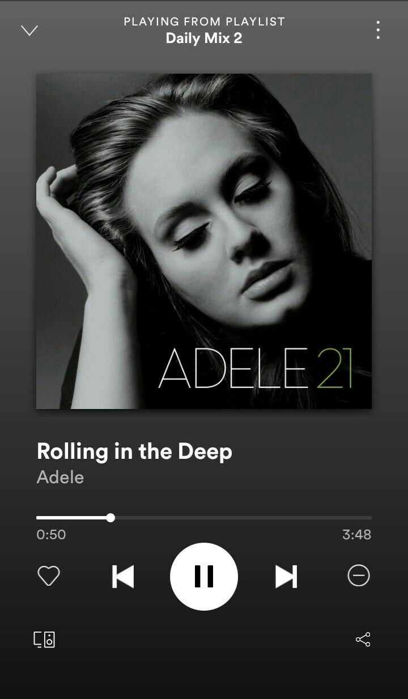
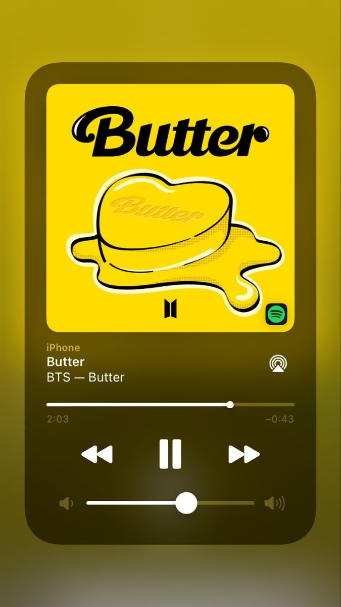
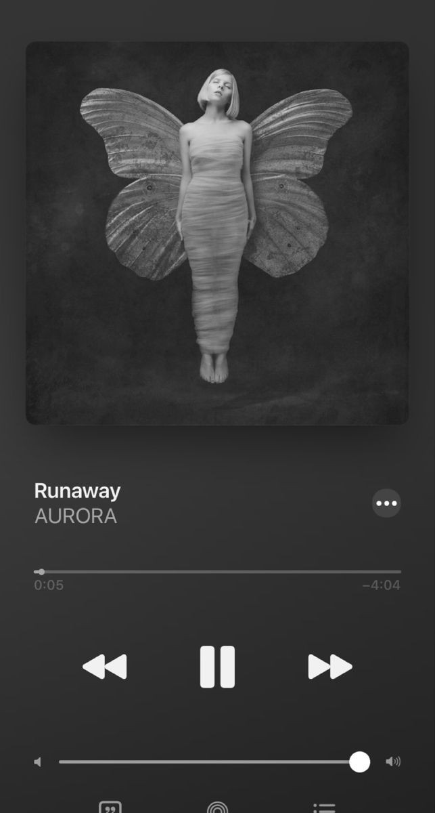
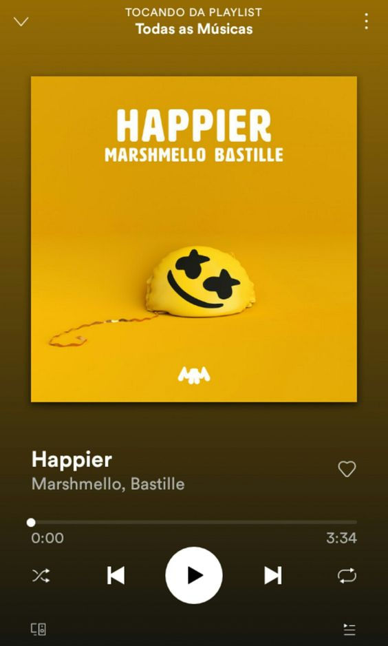
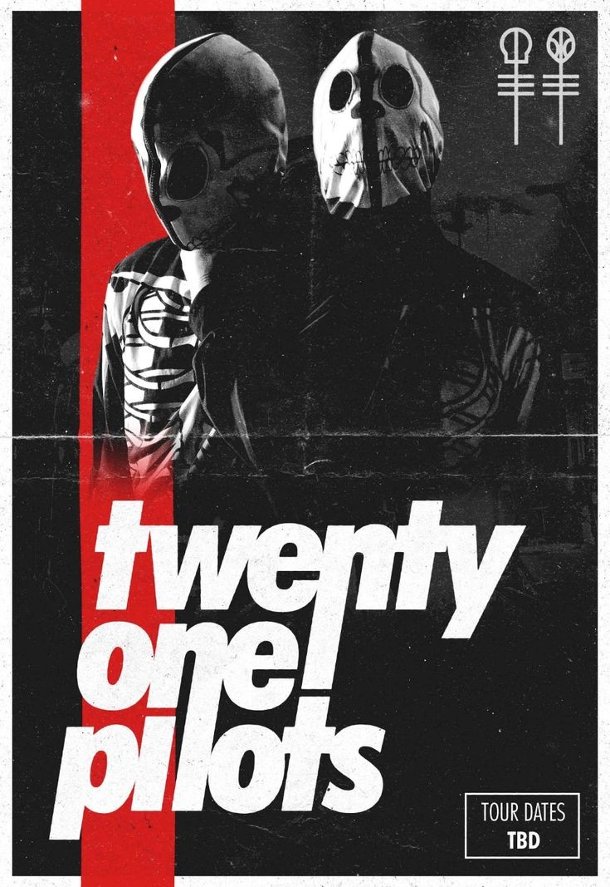
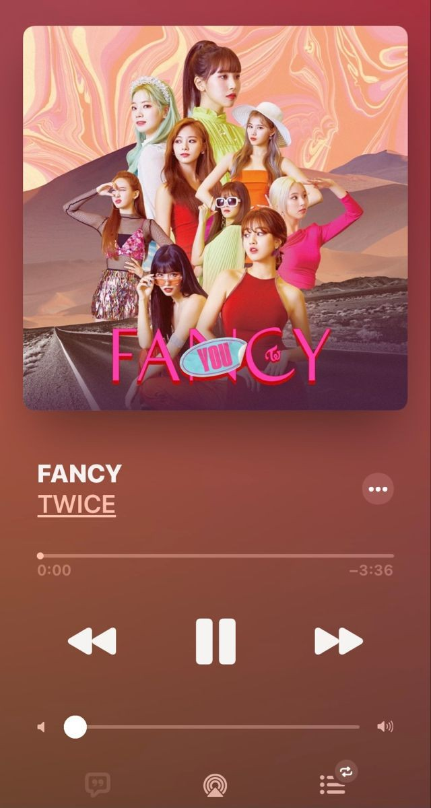

Escucha lo que quieras sin que nadie te jusgue
| Rolling in the deep-Adele | Butter-BTS | Runaway-Aurora |
|---|---|---|
|  |  |  |
| There's a fire starting in my heart Reaching a fever pitch, it's bringing me out the dark Finally I can see you crystal clear Go 'head and sell me out and I'll lay your ship bare See how I'll leave with every piece of you Don't underestimate the things that I will do There's a fire starting in my heart Reaching a fever pitch and it's bringing me out the dark | Smooth like butter, like a criminal undercover Gon' pop like trouble breaking into your heart like that (ooh) Cool shade, stunner, yeah, I owe it all to my mother, uh Hot like summer, yeah, I'm making you sweat like that (break it down!) Ooh, when I look in the mirror I'll melt your heart into two I got that superstar glow, so Ooh (do the boogie, like) | I was listenin' to the ocean I saw a face in the sand But when I picked it up Then it vanished away from my hands, dah I had a dream I was seven Climbin' my way in a tree I saw a piece of heaven Waitin' in patience for me, dah And I was runnin' far away Would I run off the world someday? Nobody knows, nobody knows And I was dancing in the rain I felt alive and I can't complain |
Nadie te pude jusgar, asi que vive como deseesy eschucha lo que quieras.
| Títi me preguntó-Bad Bunny | HUMBLE-Kendrick Lamar | 빛나리-PENTAGON |
|---|---|---|
No te compares con el mundo, solo recuerda que cada quien crece a su ritmo
Happier-MarshmelloLately, I've been, I've been thinking I want you to be happier, I want you to be happier When the morning comes When we see what we've become In the cold light of day we're a flame in the wind Not the fire that we've begun Every argument, every word we can't take back 'Cause with the all that has happened I think that we both know the way that this story ends |
 | ||
|---|---|---|---|
|  | stressed-Twenty one pilotsI wish I found some better sounds no one's ever heard I wish I had a better voice that sang some better words I wish I found some chords in an order that is new I wish I didn't have to rhyme every time I sang I was told when I get older, all my fears would shrink But now I'm insecure, and I care what people think My name's Blurryface and I care what you think My name's Blurryface and I care what you think |
||
Fancy-Twice지금 하늘 구름 색은 tropical yeah 저 태양 빨간빛 네 두 볼 같아 Oh tell me, I'm the only one baby I fancy you, I fancy you, fancy you (Twice) It's dangerous 따끔해 넌 장미 같아 괜찮아 조금도 난 겁나지 않아 더 세게 꼭 잡아 take my hand 좀 위험할거야 더 위험할거야 baby 달콤한 초콜릿 아이스크림처럼 녹아버리는 지금 내 기분 so lovely 깜깜한 우주 속 가장 반짝이는 저 별 저 별 그 옆에 큰 네 별 |
 |